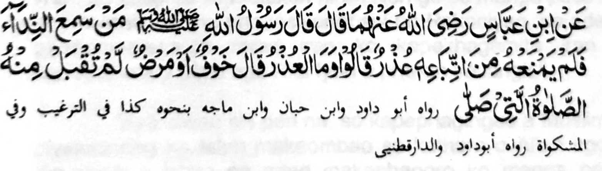

Sabap sa inidiyandi o Allah so manga balas ago manga limo ko kinggolalanen ko manga Sogo-an Niyan, na initapa-os Iyan mambo reketano so manga rarata a khabolosan ago manga siksa ko kibagaken non. Seketano na oripen tano o Allah na sabap ro-o na paliyogat reketano so kaonoti tano Ron. Daden a kapapatot iyan reketano o ba tano makasekat sa bayad ago balas ko kaphagonoti tano Ron. O begay Sekaniyan sa balas na pho-on si-i bo ko Kala iyan i limo reketano.
Sakamaoto mambo a da-a siksa a ba tano mapetharo a minitaralo o sopaka tano Sekaniyan - a Kadenan tano, sabap sa dapen a mala a kasala-an a bagi-an o oripen a baniyan kalawani so kasopaka niyan ko Datu iyan. Giyoto i sabap a apiya daden a tapa-os odi na lalangan a bapen kailangan.
Ogaid na so Allah minggolalan ko sesela-an a Nabi Niyan (Sallallaho ‘Alaihi wa Sallam) na tanto a mala Siran i gagao ko kapethapa-os Iran reketano a minggolalan ko mbara-mbarang a okit, go lalayon so kaphephaka-iktiyara Iran reketano ko manga khabolosan go piyagosay Ran reketano oman oman, ka antano Iran masabet ko kabinasa-an. O pen o di tano maka kowa sa ‘enda-o, na antawa-a pen i makasabet reketano ko di khapalagoyan a khabolosan a marata?

Miyakathitayan ko Ibn Abbas (Radhiallaho ‘Anho) a pitharo iyan a pitharo o Rasulollah (Sallallaho ‘Alaihi wa Sallam), “Saden sa makaneg ko pananawag (ma-ana so Bang) a da-a maka-aren rekaniyan ko kapagonoti niyan non a Odior, na di tharima-an so Sambayang a pizambayangan niyan.” Pitharo iran (a manga Sahabah), “Antona-a i Odior?” Pitharo iyan, “So kalek go so kasasakit.”
Melagid-lagid aya ko kiya payag iyan sangka-iya a Hadith na so Sambayang si-i sa walay (ko oriyan o kanega ko Bang) na kena ba Sambayang, ogaid na so (Madh-hab a) Hanafie na salakao a kepit iran non. Pitharo iran a mapiya pen so balas ago limo a idi-diyandi ko paralo a Sambayang na di khakowa o tao, ogaid na so tao a zambayang ko darpa iyan na minitoman iyan so paliyogaton.
Ogaid na so pamikiran non o saba-ad ko manga Sahabah ago so manga Tabi-in, na so Sambayang a Barajoma (ko oriyan o kanega ko Bang) na paliyogat, na so kibagaken non na Haram. So pamikiran non o saba-ad ko manga Ulama, na giyangkoto a tao na da niyan pen mitoman so paliyogaton a Sambayang sangkoto a wakto. Mapiya anda manaya, na miyatangked a pephakasogok so tao sa dosa ko kipembagaken niyan ko Barajoma.